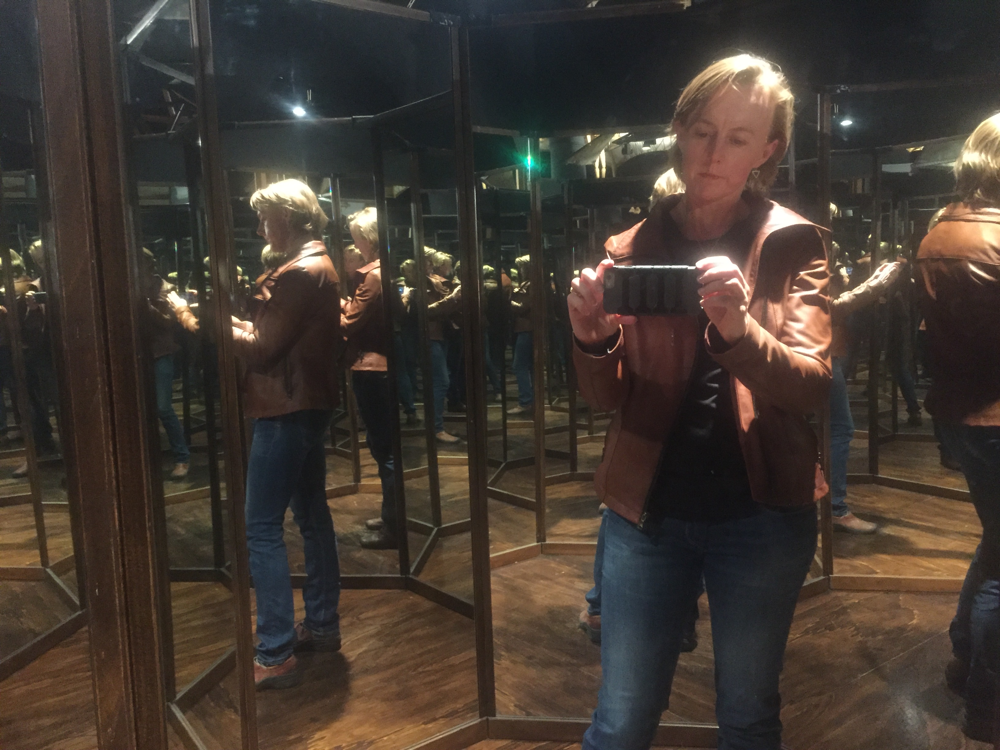

Genevieve Walsh
Mathématicienne (Professor)
|
Get the latest topology news!! here
Geometric Group Theory and Topology Seminar Some limit set pictures: A punctured torus group with a square root adjoined An orbifold generated by reflections with interesting characteristic suborbifold
Upcoming travel/conferences/etc: January 9, 2019: LSU March 14-16 2019 Spring Topology and Dynamical Systems, Birmingham, AL March 24-29 Institute for Advanced Study May 20-24 Warsaw |
G. C. Hruska and G. S. Walsh, Planar boundaries and parabolic subgroups, arXiv:2008.07639, Submitted.
R. Kropholler, S. Vidussi, G. S. Walsh, Incoherence of free-by-free and surface-by-free groups, arXiv:2005.01202, Submitted.
R. Kropholler, G. S. Walsh, Incoherence and fibering of many free-by-free groups, arXiv:1910.09601, To Appear, Annales de l?Institut Fourier.
"Right-angled Coxeter groups with non-planar boundary" Joint with Pallavi Dani and Matthew Haulmark. arxiv:arXiv:1902.01029.
"On groups with $S^2$ Bowditch boundary" Joint with Bena Tshishiku. arXiv:1710.09018.
"Boundaries of Kleinian groups" . Joint with P. Haïssinsky and L. Paoluzzi. Illinois Journal of Mathematics (Special Haken Issue) Vol 60, no. 1 (2016) 353--364.
"Right-angled Coxeter groups, hyperbolic cubes, and acute triangulations". Joint with S.-H. Kim. Journal of Topology Vol. 9 (2016) 117--142 Link to on-line article
"Big Dehn surgery space and the link of $S^3$ . Joint with N. Hoffman. Proceedings of the American Mathematical Society, Series B . Vol. 2 (2015) 17--34.
"Knot complements, hidden symmetries, and reflection orbifolds" . Joint with M. Boileau, S. Boyer, and R. Cebanu. Annales de la Faculté des Sciences de Toulouse Vol. 6 (2015) no.5 1179--1201.
"The bumping set and the characteristic submanifold" . Algebraic and Geometric Topology. , Vol 14 (2014) 283--297.
"Knot commensurability and the Berge conjecture" . Joint with M. Boileau, S. Boyer and R. Cebanu. Geometry and Topology, Vol 16 (2012) 625--664.
"Orbifolds and commensurability". "Interactions Between Hyperbolic Geometry, Quantum Topology and Number Theory" Contemporary Mathematics Vol 541 (2011) 221--231.
"Incompressible surfaces and spunnormal form" . Geometriae Dedicata Vol 151 (2011) 221--231.
"The automorphism group of the free group of rank two is a CAT(0) group" . Joint with Kim Ruane and Adam Piggott. Michigan Math. J. Vol 59, (2010), 297--302.
"Commensurability classes of 2-bridge knots". Joint with Alan Reid. Algebraic and Geometric Topology Vol 8 (2008) 1031--1057.
"Three-manifolds, virtual homology, and group determinants" . Joint with Daryl Cooper. Geometry and Topology Vol. 10 (2006) 2247-2269.
"Virtually Haken filings and semi-bundles" . Joint with Daryl Cooper. Geometry and Topology Vol 10 (2006) 2237-2245.
"Great circle links and virtually fibered knots". Topology, Vol 44 (2005) No. 5, pp. 947--958.
"Double bubbles in the three-torus". Joint with M. Carrion Alvarez, J. Corneli, and S. Beheshti. Experimental Mathematics Vol 12 (2003) No. 1, pp. 79-89.
BOOK REVIEW: Review of ``Mostly Surfaces", by R. E. Schwartz, American Mathematical Monthly , Vol 121 (2014) 954--956.
"Big Dehn surgery space and the link of $S^3" uses the computer program Orb, details of which can be found here.
"Surfaces in finite covers and the group determinant" . In: Low Dimensional Manifolds. Oberwolfach Reports Vol. 2 (2005). (non-refereed)
The topic of my dissertation is geodesic links in the 3-sphere.
MathSciNet Search
Thurston's notes Here you can download Thurston's notes "The Geometry and Topology of 3-Manifolds", from his 1979 course at Princeton.
Mazes by Weeks Everyone needs this.
American Math Society
Links to people in Low-Dimensional Topology
Partially supported by NSF grants DMS- 1709964 (2017-2021) and DMS - 2005353 (2020-2023)